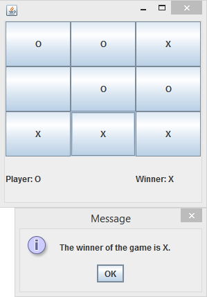

Java

Survive
A mobile-style game in which you must move left and right going on and off of platforms to avoid running into spikes on the top and bottom of the screen, as well as platforms made of spikes. Complete with a soundtrack stolen from many different artists and even a Two-Player mode! Want your friends to hate you (or vice versa)? Play a couple of rounds of Two-Player mode, and your friends will become raging with jealousy.

Tic-Tac-Toe
A simple Tic-Tac-Toe game made for school using BlueJ. The instructions are pretty self-explanatory (I mean, its Tic-Tac-Toe), but if you have difficulty wrapping your head around this apparently mind-bogglingly complex game, I will explain it to you. One player plays as a person named "Mr X". Another player plays as someone named "Mr O". There is a 3x3 panel in which Mr X places Xs and Mr O places Os. When there are "three in a row", the winner is crowned victor and the looser is prepared to be sacrificed to the lord of hell, Satan. Fun fact, hell is also the realm which invented this terribly devilish game in the first place, as a reminder for the people of the world to satisfy the devil by completing the annual sacrifice and insuring that he doesn't come up and just brutally murder everybody (he's kinda a buzz kill like that).